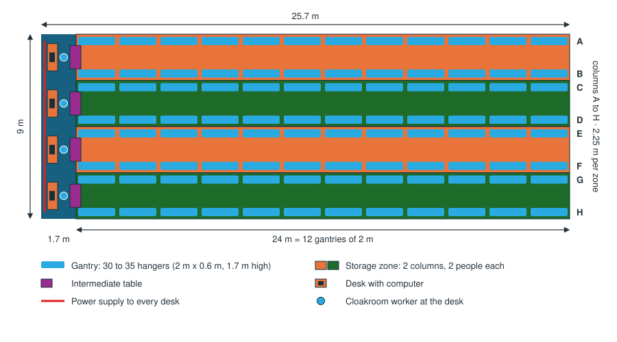

Academic Projects
Pathfinding, Driving Control and Disturbance Rejection for an Autonomous Robot
Stanford University – AA Department · Sept–Dec 2026 (ongoing) · 70 hrs

Project under the supervision of Prof. S. Bansal on the navigation and control of an autonomous robot.
- Developing path finding and path optimization algorithms for robot navigation (ROS, Python).
- Implementing driving control and disturbance rejection (PID control, discrete-time systems).
Process Optimization – School Gala
"La Nuit des Fignoss" – Arts et Métiers

Development of a new organization to improve the guests' experience
- Redesigned cloakroom organization for a large-scale student event.
- Analyzed customer flow and service bottlenecks.
- Reduced the waiting time from 1 hour to less than 5 minutes while improving service quality.
Thermal Storage Heater and Water Flow Study
Arts et Métiers – LMFL Laboratory · Feb–Jun 2025 · 80 hrs
Under the supervision of Prof. S. Simonet (LMFL) and P. Carpentier (LISPEN)

Study of water flow behavior and thermal storage efficiency applied to energy upcycling systems.
- Analysis of water flow regimes and heat exchange mechanisms.
- Design of a compact thermal storage heater.
- Application of results to intercoolers.
Visual Detection System for Dismantling Line
Arts et Métiers – LISPEN Laboratory · Sept 2024–Jan 2025 · 70 hrs
Under the supervision of Prof. A. Olabi and R. Bearee (LISPEN)

Development of a camera-based detection system to assist automated dismantling operations in an industrial context.
- Design of a visual detection system for component identification.
- Algorithm development for robust detection under variable lighting conditions.
- Introduction to automation, sensing technologies and intelligent manufacturing systems.
Instrumented Rugby Training Tackle Device
Preparatory Classes – Lycée Sainte-Geneviève

Design and development of an autonomous rugby training device able to measure impact forces and reuse mechanical energy for self-repositioning.
- Experimental comparison of strain-gauge types and configurations to accurately measure tackle impact.
- Dynamic analysis and optimization of spring characteristics to recover and reuse impact energy.
- Integration of sensing and mechanical subsystems into a functional prototype.
Motorized Snowboard
High School – Lycée Aux Lazaristes-Lasalle

Design and development of a device helping snowboarders when they are stuck on a flat surface, so they do not need to unstrap their bindings to push themselves
- Experimental comparison of various PLA (material for 3D printing) to test the friction coefficient.
- Dynamic analysis of spring characteristics to keep the track on the snow.
- Integration of sensing and electrical subsystems into a functional prototype in order to get the slope gradient.